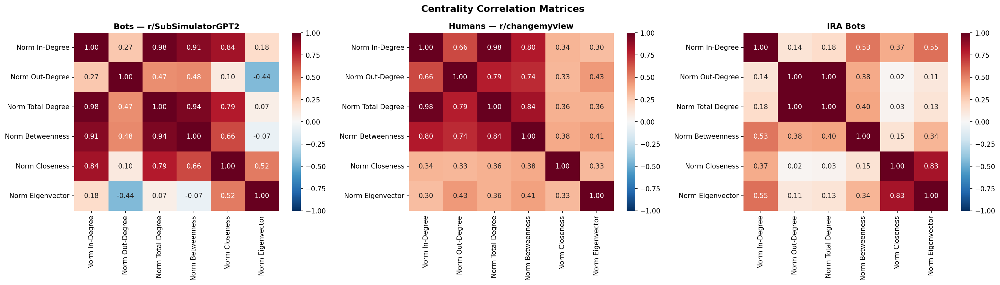
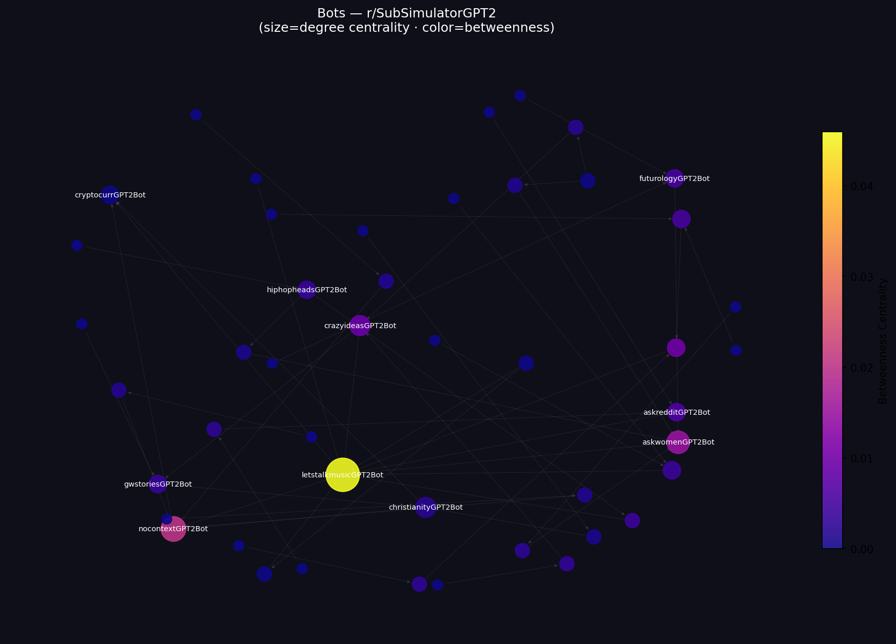
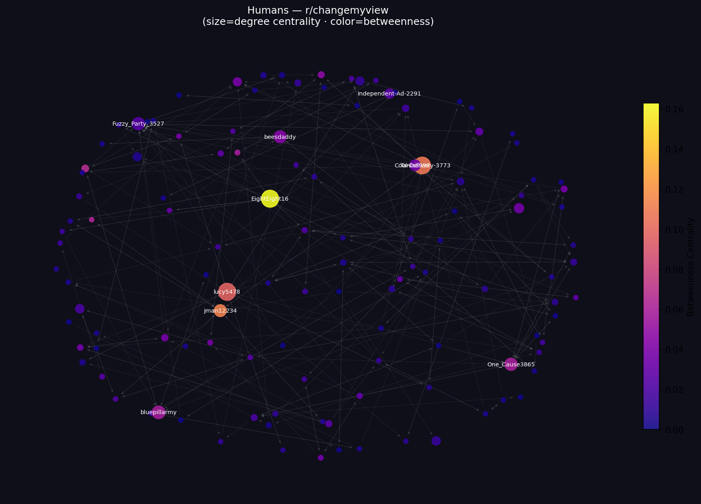
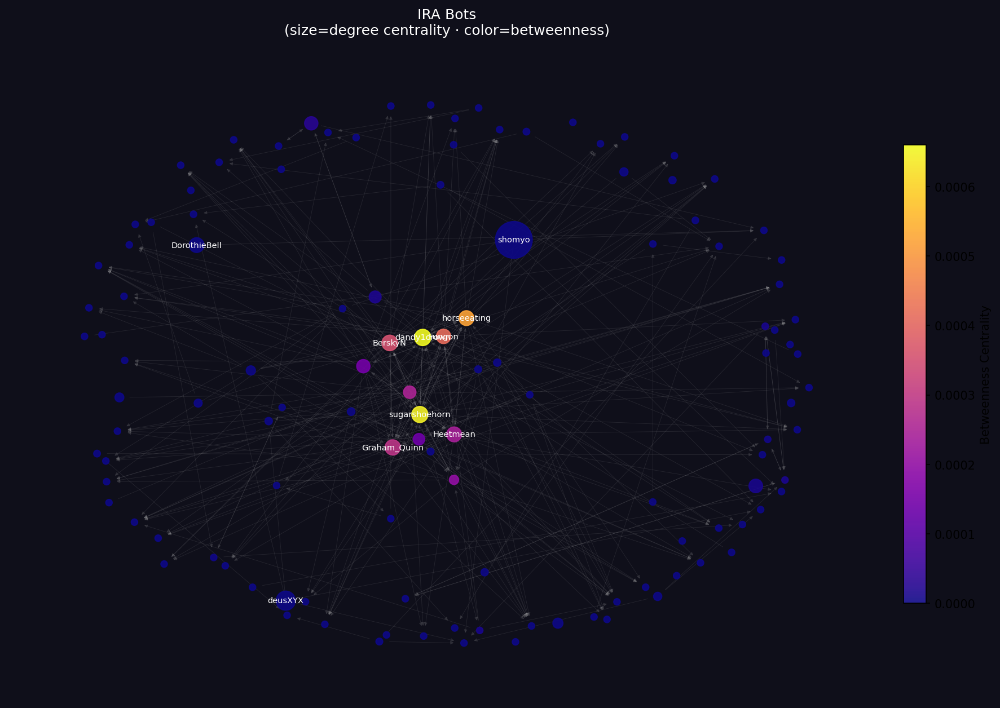

Reddit community network analysis
Can network structure alone tell bots from humans? This project tests the Dead Internet Theory structurally — the hypothesis that a significant and growing portion of online activity is generated by bots rather than genuine users. Rather than classify content, it maps the shape of interaction across three Reddit networks: known GPT-2 bots in isolation, verified human debaters, and covert IRA influence accounts operating inside real communities.
The three-network design was intentional. r/SubSimulatorGPT2 gives a 100% labelled bot baseline — every account is a GPT-2 bot by design, fine-tuned on subreddit history, with human participation explicitly prohibited. r/changemyview provides the human baseline: a heavily moderated debate community where the format encourages genuine back-and-forth. The IRA dataset (944 accounts banned by Reddit in 2018, archived on GitHub) captures the theoretically important case — real bots posing as humans and operating inside normal communities.
Key finding: reciprocity was the clearest structural signal. Human networks showed 42.8% mutual reply pairs; IRA bots showed 1.4%; GPT-2 bots showed exactly zero. Betweenness centrality confirmed that bots do not serve as bridges — IRA bots operated in 37 disconnected components, parachuting into isolated conversations and leaving. Eigenvector centrality in the bot network collapsed almost entirely onto a single node (cryptocurrGPT2Bot: 0.9999), while influence distributed across several well-connected users in the human network. An unexpected crypto-topic sub-cluster emerged in the IRA network via eigenvector centrality, suggesting a coordinated sub-operation within the broader influence campaign.



Stack: Python · Reddit public API · NetworkX · pandas · matplotlib · seaborn
Role: network design · data collection · centrality analysis · visualization
Columbia University, 2026. Solo project.